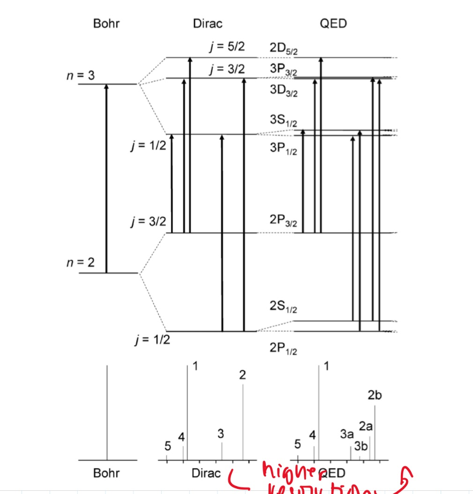
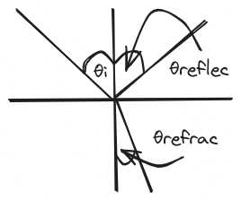
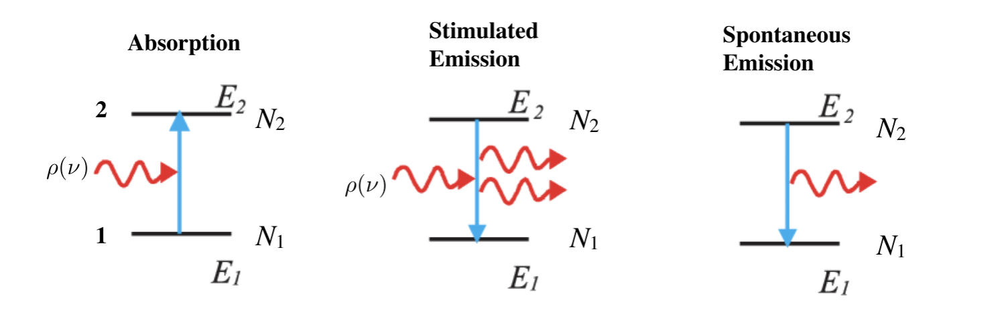
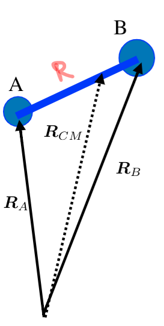

TOC_3
- questions
- good resources
- lectures
- 1: introduction
- 2: WebMO practice
- 3: intro to QM
- 4: intro to EMR
- 5: light-matter interaction
- 6: prep for final presentation
- 8: molecular symmetry and group theory 1
- 9: molecular symmetry and group theory 2
- 10: molecular rotation and spin statistics 1
- 11: molecular rotation and spin statistics 2
- 12: molecular vibration
- 13: vibrational infrared and raman spectroscopy
- 14: electronic spectroscopy
- 15: electronic spectroscopy
- 16: magnetic resonance
- 17: spectroscopy
- 18 - 25: final presentations
*
questions
- what do the different polarizations mean
- what do s and p waves represent
good resources
lectures
1: introduction
- basic spectroscopy: light source -> sample -> prism -> detector
- act of separating light
- history of spectroscopy:
- 1666 Newton: continuous spectrum of sun
- 1814 Fraunhofer: found sharp dark lines in sunlight (discrete -> indicts QM)
- 1900: development of QM
- interstellar molecules (unstable)
- our universe:
- molecular clouds:
- very cold: 10 - 100 K
- not dense: $$\frac{10^{3}}{cm^3}$$
- this means not many collisions happening, so very unstable molecules can exist <- spectroscopic observation plays important role
- atmosphere:
- hot: 300 K
- dense: $$\frac{10^{20}}{cm^3}$$
- molecular clouds:
- spectroscopy hydrogen atom: chief experimental basis for theories and structure of matter
- first spectra before QM: Angstrom and Rydberg
- spectra with QM: Bohr
- de Broglie: duality of matter $$\lambda = \frac{h}{p}$$ E = hν
- Schrodinger
- relativistic quantum theory:
- Dirac: combine Schrodinger and Einstein
- $$E = ih \frac{\partial}{\partial \tau}$$
- Einstein: relativity (things moving at speed of light)
- Dirac: combine Schrodinger and Einstein
- splitting of hydrogen: bohr -> dirac -> qed 
2: WebMO practice
- dihedral angle: rotate relative to a plane
- linear molecule: 2 rotational constants
- non-linear molecule: 3 rotational constants
- first optimize then calculate vibrational frequency
3: intro to QM
4: intro to EMR
electromagnetic radiation
- electric () and magentic () fields pervade all space; they are vectors with three components (x, y, z)
- in vacuum, speed of light is 2.998 × 108 m/s
- general form: E(r,t) = E0cps(wt−k dotr)
- where E0 is the amplitude vector, k is propagation vector, with r being vector containing x, y, z
- planck relation: $$E = hv = \hbar w = \frac{hc}{\lambda}$$
- 1 eV  = 1.602 × 10−19 J  = 8065.54 cm −1
fields (EMR fields)
- 6 fields that are related by these two equations: $$ \vv{D} = \epsilon \vv{E} = \epsilon_0 \vv{E} + \vv{P}$$ $$ \vv{B} = \epsilon \vv{E} = \mu_0 \vv{H} + \vv{M}$$
- $$\vv{E}$$ and $$\vv{H}$$ (electric and magnetic field) are perpendicular to each other and the propagation vector $$\vv{k}$$
- $$H_0 = \sqrt{\frac{\epsilon}{\mu}}E_0$$
polarization of light
- light is transverse wave: osciallations of $$\vv{E}$$ and $$\vv{H}$$ are perpendicular to propagation direction
- $$ k = |\vv{k}| = \frac{2 \pi}{\lambda} = \frac{w}{c}$$
- still have DOF in plane perpendicular to $$\vv{k}$$, which relates to the polarization of light
- unpolarized light: no perferred direction for $$\vv{E}$$, can be any direction perpendicular, is a statistically mixed state
- polarized light: the polarization of $$\vv{E}$$ can rotate during oscillation, the angle
- for light in the z direction: (Ex0cos(kz−wt),Ey0cos(kz−wt+θ),0)
- plane/linearly polarised: θ= 0
- elliptically polarized light: $$\theta = +/- \frac{\pi}{2}$$, and Ex0 ≠ Ey0 left/right hand
- circularly polarized light: Ex0 = Ey0, L/R
- for light in the z direction: (Ex0cos(kz−wt),Ey0cos(kz−wt+θ),0)
- light is transverse wave: osciallations of $$\vv{E}$$ and $$\vv{H}$$ are perpendicular to propagation direction
angular momentum and light
L/R circularly polarized photons have angular momentum  + / − ℏ
- no Sz = 0 photons as light must remain transverse (what does this mean)
- photon is a massless particle, don’t actually haves spin
- have helicity: value of projection of spin operator onto the momentum operator
- photon is a massless particle, don’t actually haves spin
- unpolarized light: random statistical mixture of L/R
- polarised light: coherent superposition of L/R circularly polarized light
- no Sz = 0 photons as light must remain transverse (what does this mean)
propagation of light
- speed of light in vacuo: $$c_0 = \frac{1}{\sqrt{\epsilon_0 \mu_0}}$$
- speed of light in medium: $$c_0 = \frac{1}{\sqrt{\epsilon \mu}}$$ where ϵ and μ are characteristic to the medium
- refractive index: $$n = \frac{c_0}{v} = \sqrt{\frac{\epsilon \mu}{\epsilon_0 \mu_0}} \geq 1$$, where μ is magnetic permittivity
- for nonmagnetic media: $$n = \sqrt{\frac{\epsilon}{\epsilon_0}} = \sqrt{\epsilon_r}$$, where ϵr is the relative electric permittivity
- dielectric constant: measured by response to static/low frequency electric field
reflection and refraction
- frequency (energy) is unchanged from vacuum value when passing through a medium, v = v0, so since c = c0/n: the wavelength is reduced: λ=λ0/n
- $$E = hv = \frac{c_0 / n}{ \lambda_0 / n}$$
- reflection (specular, meaning mirror like): θinc =θrefl
- refraction (snells law): n1sinθinc = n2sinθrefr
- polarization:
- determines the reflectivity
- R is reflectance, T = 1 − R is the transmittance
- for s and p waves: with T = 1 − R
- Fresnel equation
- $$R_s = |\frac{n_1 cos \theta_i - n_2 cos \theta_t}{n_1 cos \theta_i + n_2 cos \theta_t}|^2$$
- $$R_p = |\frac{n_1 cos \theta_t - n_2 cos \theta_i}{n_1 cos \theta_t + n_2 cos \theta_i}|^2$$
- another form:
- $$R_s = |\frac{sin(\theta_2 - \theta_1)}{sin(\theta_2 + \theta_1)}|^2$$
- $$R_p = |\frac{tan(\theta_2 - \theta_1)}{tan(\theta_2 + \theta_1)}|^2$$
- normal incidence: θi =θt = 0, then $$R = R_s = R_t = (\frac{n_1 - n_2}{n_1 + n_2})^2$$
- total internal reflection: when n1 > n2, there is a critical angle, which Rs, Rt = 1

- brewster’s angle: when θt +θi = 90deg Rp → 0 and Tp → 1, p polarized light will not be reflected, or if the incident light is unpolarized, only s polarized light will reflect, this is how you can produce polarized light
- θB = arctan(n2/n1)
- no reflection for p wave
- dispersion
- sellmeier equation (empirical relation between n and λ) 
- absoption and refractive index
- normal regions of dispersion separated by regions of anomalous dispersion between different regions of NMR spectrum
- kramers-kronig index
- birefringence
- refractive index: depends on angle between polariztion of light and crystal axis
- frequency (energy) is unchanged from vacuum value when passing through a medium, v = v0, so since c = c0/n: the wavelength is reduced: λ=λ0/n
5: light-matter interaction
radiation density and intensity of light
- let ρ be volume density of energy in EM radiation J/m3
- to find contributions at various frequencies ρ(v) is energy density per unit frequency, and $$ ρ = ∫0^inf  p(v) dv$
- intensity of light: I = ∫0infI(v)dv
- photon flux: number of photons flowing through a unit area per unit time $$F = \frac{I}{(hv)}$$
- relations: I(v) = p(v)c = p(v)(c0/n)
- $$I(v) = \frac{1}{2} \epsilon_0 E^2_0 c$$, where E0 is the amplitude for electric field osciallations at frequency v
absorption and emission
- consider a two level system: can have three processes:
- absorption
- spontaneous emission
- stimulated emission

- A and B are transition probabilities, N1, N2 are populations
- Einstein’s treatment: @ thermal equilibrium, population ratio given by Boltzmann factor, with degeneracies g: $$\frac{N_2}{N_1} = \frac{g_2}{g_1} e^{-hv / kT}$$, where hv = E2 − E1
- spontaneous decay (no radiation) kinetic rate law: $$\frac{-d N_{2}}{dt} = A_{21}N_{2}$$, N2(t) = N2(0)e−A21t, so radiative lifetime of excited state is $$\frac{1}{A_{21}}$$
- with radiation:
- upward transition: W12 = N1B12ρ(v)
- downward transition: W21 = N2B21ρ(v) + N2A21
- at eq: these two rates must be equal, so we can solve for ρ(v) and insert the thermal eq Boltzmann factor and equate to thermal blackbody spectrum:
- $$\frac{A_{21}}{(g_1/g_2) e^{\frac{hv}{kT}} B_{12} - B_{21}}$$
- we get g1B12 = g2B21: equal probability of 1 to 2 or 2 to 1
- and $$\frac{A_{21}}{B_{21}} = \frac{8 \pi h v^3}{c^3} \propto v^3$$
- higher frequency: spontaneous emission
- lower frequency: stimulated emission
transition dipole momentum
- transition rate determined by “transition dipole moment”
- transition dipole moment between two states n and m is a vector: $$\mu_{mn} = \int \psi_m^* \hat{\mu} \psi_n dV = \langle m | \hat{mu} | n \rangle $$
- $$\hat{mu}$$ is the electric dipole moment operator: $$\hat{mu} = \sigma_i q_i r_i$$
- transition rates determined by Einstein coefficients times a lineshape factor resonantly peaked at transition frequency (E2 − E1), enforces energy conservation
beer’s law
- not covered much, study more later
line profiles for spectral lines
- conservation of energy: v = v12: $$v_{12}$ splittings between eigenvalues - $$δ(v - v12)$$
- reality: emission/absoption never perfectly monochromatic (single wavelength/color): each line has characteristic shape/profile, with certain width δv, quantified as FWHM
- lines spaced apart less than δv cannot be seperated/resolved
- common line shape:
- lorentzian: broadening by the natural lifetime of the excited state
- guassian: inhomogeneous broadened lines (Doppler broadening)
- voigt: mixes guassian and lorentzian
- convolution of two and appropriate when homogeneous and inhomogeneous mechanisms are important
- natural linewidth
6: prep for final presentation
8: molecular symmetry and group theory 1
- operators:
- Ê is identity operator
9: molecular symmetry and group theory 2
- group theory and quantum mechanics
- point symmetry operator R
- representation of R based on point in 3D space: real orthogonal 3 × 3 rep M = Γ(R)
- symmetry operations as operators on space of wavefunctions
- generalization of symmetry on arbitrary point: $$r = M r = \begin{bmatrix} x^, \\ y^, \\ z^, \end{bmatrix}$$
- we can define the operator P̂R by
- P̂R|ψ⟩=P̂R|ψ(x,y,z)⟩ = |ψ(M−1r)⟩=|ψ(x,,y,,z,,)⟩
- interested in finite dimensional subspace of Hilbert space (5D space spanned by 3d orbitals): basis set is set of solutions of Schrodinger equation, eigenfunctions of Ĥ
- point symmetry operator R
- symmetrization
- projection operator $$\hat{P^{\mu}}$$: annihilates all functions that does not belong to μ-th irreducible representation
H2O
10: molecular rotation and spin statistics 1
- born-oppenheimer approximation: fixed nucleus
- total hamiltonian consists of kinetic energy of nucleus, electrons, and coloumb potential energy between nuclei, nuclei-electrons, and electrons
- (and BO adiabatic approximation): wavefunction is product of electron and nuclei Ψn, i =χi(n)(R)ψnel(r;R)
- for a fixed R we get the electronic schrodinger equation: Ĥ=Ĥnuc +Ĥelec, where Ĥelec =ψnel(r;R) = Enel(R)ψnel(r;R)
- nuclear schrodinger equation: [Ĥnuc+Enel(R)]χin(R) = En, iχi(n)(R)
- then by changing the value of R, we get the potential energy surface Enel
- separation of vibration and rotation
- separation of translational motion
- we can seperate translational motion and internal motion (rotation and vibration) by using RCM, center of mass 
- $$\hat{T}_{nuc} = - \frac{\hbar^2}{2M} \nabla^2_{CM} - \frac{\hbar^2}{2 \mu} \nabla^2_{int}$$
- separation of translational motion
- can further seperate vibrational and rotational motion
- using polar coordinates
- $$\hat{H}_{nuc} + E^{el}_n (R) = \hat{T}_{vib} + E^{el}_n (R) + \frac{1}{2 \mu R^2} \hat{L}^2 (\theta \psi)$$ (last term is Ĥrot)
- we get vibration-rotation wavefunction: χn, v, J, M(R) = Sv(n)(R)YJM(θψ) where vibration only depends on bond length and rotation depends on two angles
- using polar coordinates
- rotation of diatomic molecules
- rigid rotater: if you set R = Re where Re is equlibirum bond length, T̂vib = 0
- spherical harmonics (eigensolution)
- for L̂2|YJm, ℏ2J(J+1) is the eigenvalue
- for L̂z, ℏm is the eigenvalue
- moment of interia is simple Ie =μRe2
- rotational constant: $$B_e = \frac{\hbar^2}{2 I_e}$$ (J)
- $$ = \frac{\hbar^2}{8 \pi^2 I_e}$$ (Hz)
- $$ = \frac{\hbar^2}{8 \pi^2 I_e c}$$ (cm-1)
- polyatomic molecules: linear
- moment of interia is more complicated:
- polyatomic molecules: symmetric top
- polyatomic molecules: spherical top
- polyatomic molecules: asymmetric top
- optical selection rule: diatomic and linear
- symmetric and asymmetric top molecules